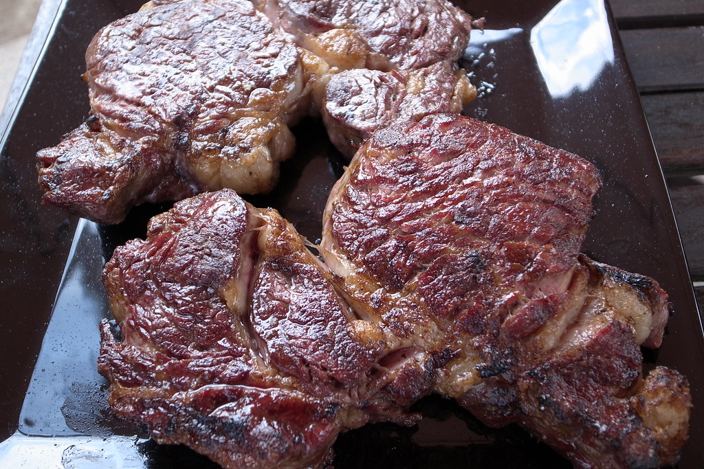

recipes
Perfect Ribeye Steak
ingredients
- 1 Ribeye steak
- Kosher salt
- Black pepper
- 2 cloves of garlic
- 1 sprig of thyme
- 1 tablespoon of any high smoke point oil
instructions
- Pat your ribeye dry and season with a liberal amount of kosher salt on all sides. Season a less generous amount with (preferably freshly ground) black pepper on all sides again.
- Heat a cast iron pan with your oil and wait until it’s ripping hot, and you visibly see smoke rising from the pan.
- Place the ribeye down on the side with its fat cap and sear until the fat is rendered. Then place on one of the two large surface area sides.
- Sear until you see a deep brown crust form on the side being seared, meanwhile prepare your aromatics (the butter, garlic, and thyme).
- Flip the steak and then drop in your aromatics. Using a tablespoon, tilt the pan towards you and quickly baste the butter over your steak.
- Using a meat thermometer, probe the inside of the steak and remove from the pan once it reaches an internal temperature of 135 degrees Fahrenheit. Wrap the steak in foil and wait 5 minutes until the internal temperature rises to 145 which is a perfect medium rare.